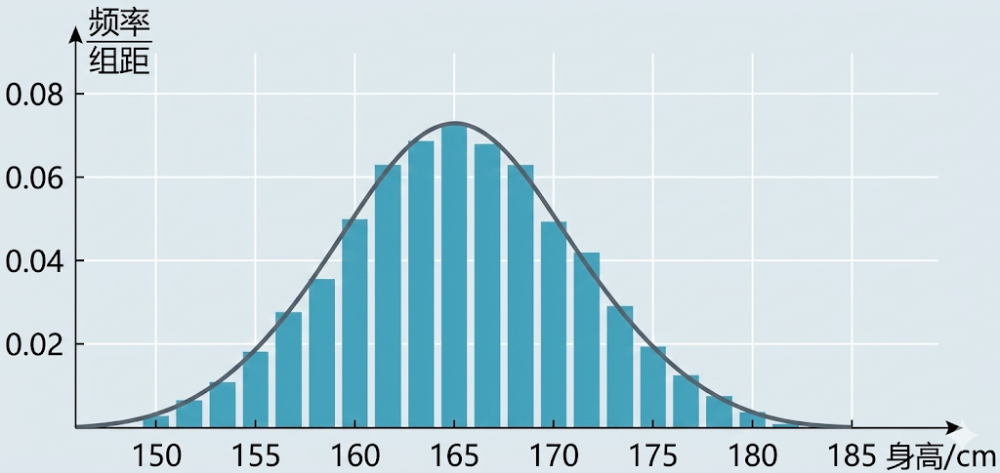
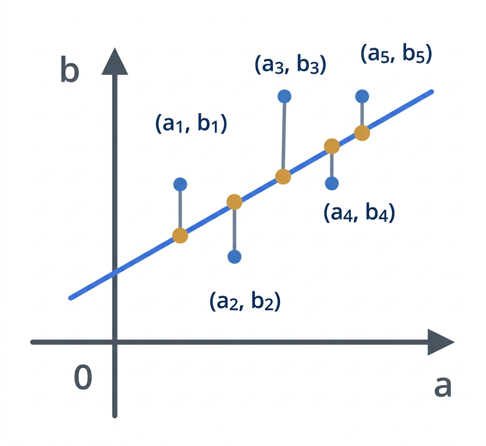
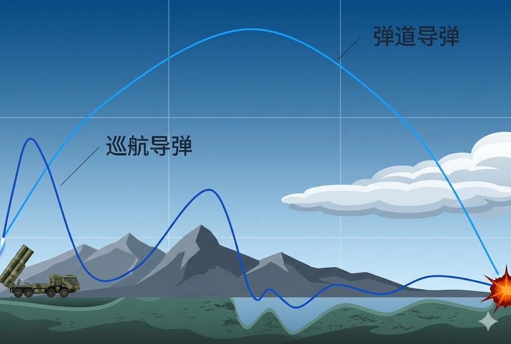
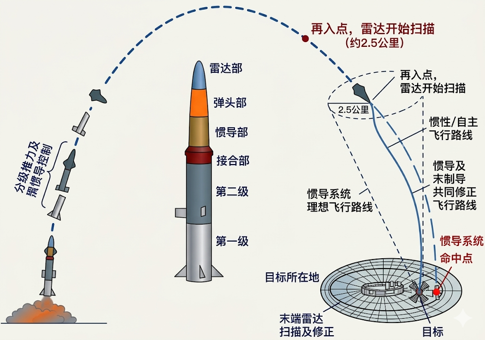
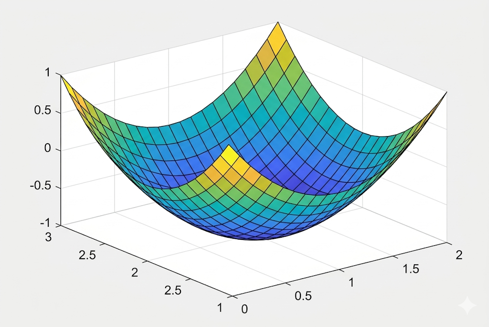
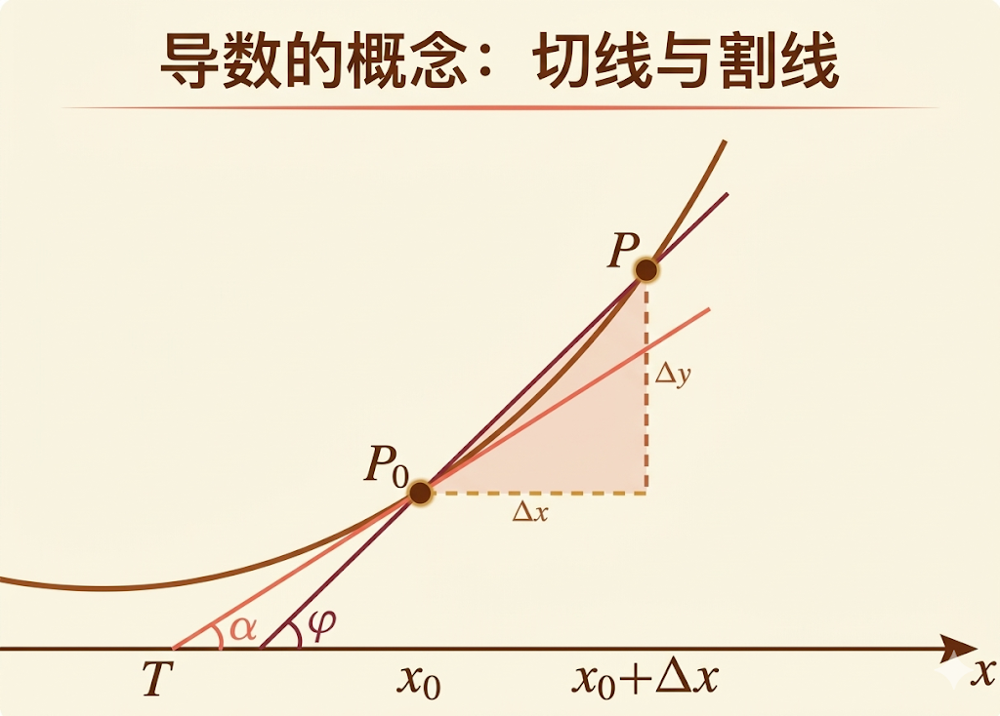
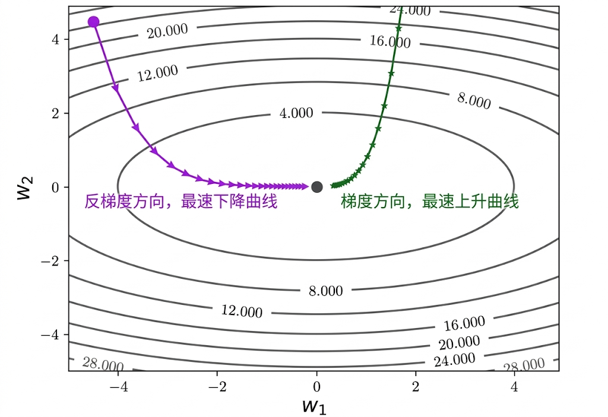
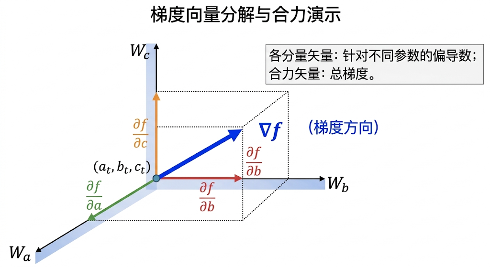
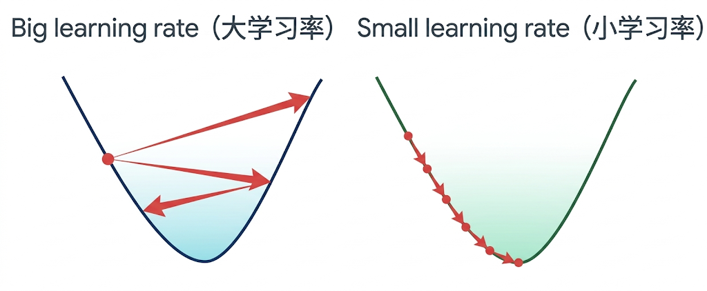
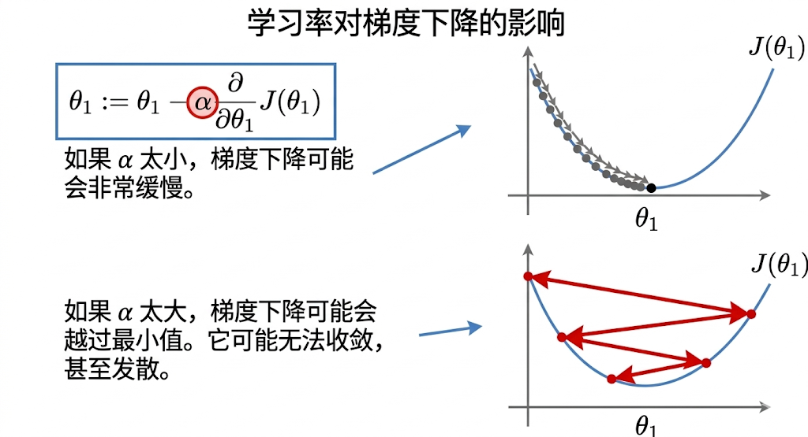

“我没有失败。我只是找到了一万种行不通的方法。”——托马斯·爱迪生
我们上篇文章讲了 AI 模型训练的核心原理，但是我们还有几个问题并没有解决：
（1）模型参数必须要一开始全部设置为0吗？有没有更加科学和高效的参数初始化方法？
（2）将8行数据逐条代入到函数中分别计算（即模型预测）的效率难免太低了，这样一条一条计算下去到猴年马月，有没有比较快的办法？
（3）发现损失函数很大（拟合的很差），需要怎么高效调整参数，才能使得损失变得越来越小？
让我们来逐个解决上面的问题，首先是第一个问题，模型参数初始化的问题。
$y=w_1x_1$...，其中 $w_1w_2$ 为参数/权重。
参数初始化的方法有很多，除了我们上篇文章提到的全零初始化，还有随机初始化。
随机初始化分为两种，一种是均匀分布，另一种是高斯分布。
均匀分布指的是在某一个数值区间内进行随机初始化，比如在 -0.1 到 0.1 的范围内随机分配数值。
另外一种叫做高斯初始化，这种方法得到的数据分布类似于我们日常生活中的数据分布规律，即高斯分布，也叫做正态分布，比如全中国人的身高分布。
而身高的分布一般呈现这样的特征：大部分人的身高集中在中间区域（比如165cm左右），这就意味着你很难在大街上看到一个身高高于2米的人，同样你也很难在街上看到一个身高矮于1.5米的人，也就是特别高或特别矮的同学很少，形成一个“中间多，两边少”的对称分布（俗称钟形曲线），如下图：

我们的采用高斯分布的方法进行参数初始化，得到的参数分布最终就如上图的钟形曲线。
除了上述两种基本的参数初始化方法，还有基于激活函数的初始化方法，以及预训练初始化和数据敏感初始化，这里暂时不展开。
我们继续来解决第二个问题，如何加快我们的运算速度？如果逐条代入那就太慢了，能不能一次性将所有数据同时进行运算呢？
只有8个样本数据的数据集还好，但是如果是有8千万个样本的数据集呢？恐怕内存都会撑爆，所以最多只能分批进行运算，比如总共有 80 条数据，则可以分10批（批的英文是batch），每批8条（ 即 batch_size=8）。
注意，这里出现了一个 batch_size 的概念，batch_size 是很重要的一个与训练相关的参数，因为重要，它又属于“超参数”，就是模型在一次训练中同时处理多少条样本数据。它会影响显存占用、训练速度，以及梯度估计的稳定性，因此是一个非常重要的训练参数。
什么是“超参数”，能够影响模型的学习行为，甚至最终影响模型效果的参数就称之为超参数。
既然是可以分批运算，一批（一个batch）里面的数据量也不小呢，但是对于计算机来说同时计算 8 个样本数据，非常快，没有任何压力，还记得我们去买电脑的时候看到的性能参数吗？
什么是线程？什么是进程？
你打开一个软件（比如微信、浏览器）→ 这是一个进程，相当于车间里的工人。一个车间里面同时在做很多事：收消息、显示界面、发图片。每一件 “同时在做的小事”，就是一个线程，相当于车间里的工人；多线程 = 同时干多件事。
计算机的 CPU 里面有线程，它只要开启 8 个线程，其中每个线程负责1行数据的运算，同时运算 8 行数据的时间就约等于运算1行数据的时间，如果还嫌不够快，又或是由于一个batch_size的样本涉及到的运算超级的复杂，导致超级的慢，还可以用英伟达的 GPU 来并行计算，它里面提供了成千上万的线程。
PS：我们在讲第二课时，对于 CPU 和 GPU 的区别有做过对比。
每计算完一批数据，我们都可以根据这一批样本的预测结果与真实结果之间的差距，计算出当前这一个 batch 的损失值。
损失越大，说明模型拟合得越差；损失越小，说明模型拟合得越好。
那么问题来了：如果发现当前损失还比较大，我们应该怎样调整参数，才能尽可能高效地让损失不断下降呢？
要解决这个问题，我们再来回顾一下训练的内涵是什么，“训练”就是用某个模型结构（函数/神经网络）来拟合某个数据集，拟合的好不好，就是看模型的预测值和真实值之间的差距有多大，从而通过调整参数来影响预测值，使得预测值越来越接近真实值。预测值和真实值之间的误差经过某种方式量化后又称之为损失，损失越小越好。
我们继续沿用上节课表1的数据样例，只是这一次我们对数据进行一些简化，我们只保留一个变量（特征）：
| 序号 | 出勤率（%） | 英语成绩（分） |
|---|---|---|
| 1 | 100% | 98 |
| 2 | 80% | 86 |
| 3 | 99% | 90 |
| 4 | 85% | 88 |
| 5 | 95% | 60 |
| 6 | 72% | 70 |
| 7 | 50% | 30 |
| 8 | 96% | 89 |
观察这个具有8个样本的数据集在二维直角坐标系中的分布，可以很明显大致发现一个规律：出勤率越高，英语成绩也越高，因此我们可以尝试用一元一次方程来拟合：
$$ y = wx + b，其中w为权重，b为偏置 $$现在的任务就变成：如何确定 $w$ 和 $b$ 具体值？回想初中课堂上学习的知识，$w$ 不就是斜率 $k$ 吗？$b$ 不就是截距吗？通过取两个任意数据点（100%，98）、（80%，86）马上就可以确定 $k$ 和 $b$ 的值：
$$ y=0.6x+38 $$但是将代入到其他6个点进行验证，发现无法拟合其他数据点，泛化性很差：
| 序号 | 出勤率（%） | 英语成绩（分） | 预测英语成绩（分） |
|---|---|---|---|
| 3 | 99% | 90 | 97.4 |
| 4 | 85% | 88 | 89.0 |
| 5 | 95% | 60 | 95.0 |
| 6 | 72% | 70 | 81.2 |
| 7 | 50% | 30 | 68.0 |
| 8 | 96% | 89 | 95.6 |
在只考虑两个数据点的情况下求解 $k$ 和 $b$ ，实际上是无法找到一条可以百分之百“穿过”所有数据点的直线，只能退而求其次：求“最优”，即找到一组可以最小化所有数据点到直线的竖直方向（y 方向）距离的平方（均方误差思想）和 的 $k$ 和 $b$，这就是最小二乘法的思想，如下图：

回顾一下高中数学中最小二乘法下的 $k$ 和 $b$ 的求解公式：
$$ % 最小二乘法下斜率和截距的中文符号LaTeX计算公式 \begin{align*} % 斜率计算公式 \text{斜率 k} &= \frac{\text{数据点数量} \times \sum (\text{每个}x\text{值} \times \text{对应}y\text{值}) - \sum (\text{所有}x\text{值}) \times \sum (\text{所有}y\text{值})}{\text{数据点数量} \times \sum (\text{每个}x\text{值的平方}) - \left( \sum (\text{所有}x\text{值}) \right)^2} \\ % 截距计算公式 \text{截距 b} &= \frac{\sum (\text{所有}y\text{值})}{\text{数据点数量}} - \text{斜率} \times \frac{\sum (\text{所有}x\text{值})}{\text{数据点数量}} \end{align*} % 其中符号说明（可根据需求选择保留）： % - $\sum (\text{每个}x\text{值} \times \text{对应}y\text{值})$：表示将每一组$(x,y)$中$x$与$y$相乘后，对所有结果求和 % - $\sum (\text{所有}x\text{值})$：表示对所有$x$数据点求和 % - $\sum (\text{所有}y\text{值})$：表示对所有$y$数据点求和 % - $\sum (\text{每个}x\text{值的平方})$：表示将每个$x$值平方后，对所有结果求和 % - $\left( \sum (\text{所有}x\text{值}) \right)^2$：表示先对所有$x$值求和，再对求和结果取平方 $$$k$ 和 $b$ 的求解公式实际上是在最小二乘法条件下，对损失进行优化后得到的解析解。通过找到一组可以使得“直线”整体误差最小，拟合效果最好的 $k$ 和 $b$ ，就完成了训练任务。
现在我们要开始增加一点点难度了。上面这个案例是以线性函数为例，现在我们以一个“导弹拦截”，也就是防空导弹的预测模型为例，讲讲怎么运用“抛物线”这种非线性模型来预测导弹的轨迹，从而“精确”反导。

假设我们有以下导弹的飞行轨迹数据，并且这些轨迹数据依然是以平面直角坐标系为基础的数据点：
| 数据点 | X (公里) | Y (公里) | 说明 |
|---|---|---|---|
| 1 | 0 | 0.00 | 发射点（海平面） |
| 2 | 2500 | 1125.00 | 上升阶段 |
| 3 | 5000 | 2000.00 | 上升阶段 |
| 4 | 7500 | 2625.00 | 上升阶段 |
| 5 | 10000 | 3000.00 | 上升阶段，接近顶点 |
| 6 | 12500 | 3125.00 | 弹道顶点（最高点） |
| 7 | 15000 | 3000.00 | 下降阶段 |
| 8 | 17500 | 2625.00 | 下降阶段 |
| 9 | 20000 | 2000.00 | 下降阶段 |
| 10 | 22500 | 1125.00 | 下降阶段 |
| 11 | 25000 | 0.00 | 落点（海平面） |
抛物线方程： y = -0.00002x² + 0.5x + 0

通过观察这些数据点在平面直角坐标系的轨迹，我们很容易就会联想到初中时候学习过的抛物线公式：
$$ y = ax^2 + bx + c $$现在我们的任务就变成了，找到一组可以使得抛物线尽可能拟合平面直角坐标系中的所有数据点，即 $a、b、c$ 的参数。
根据初中数学知识，我们知道系数 $a$ 决定抛物线的开口方向和弧口的窄宽程度，而系数 $b$ 影响了抛物线的对称轴位置，最后系数 $c$ 影响的是抛物线与 $y$ 轴的交点。
那么我们观察目前平面直角坐标系的数据点轨迹，这条“抛物线”应该是弧口向上的所以 $a＜0$，对称轴位于 $x＞0$ 的区域，根据对称轴公式 $x = -b/(2a)$，因此 $b＞0$，其次数据轨迹会“穿”过 $y＞0$ 的区域，因此 $c＞0$。
等等，这种思考方式完全还是初中生的思维啊！要是初中知识能解的话，还要深度学习干什么？
因此打住，我们回顾上节课中提到的深度学习训练思想，我们已经通过观察平面直角坐标系中的数据分布，能够建立以下抛物线模型：
$$ y = ax^2 + bx + c $$接下来我们应该找到该模型的损失函数，通过优化损失来寻找最佳的 $a、b、c$ 参数。
但是我们要使用哪种损失函数呢？上节课我们提到了两种损失函数，一种是基于均方误差的损失函数，一种是基于交叉熵误差的损失函数，我们说对于连续型问题我们偏向于使用均方误差，而对于离散型问题我们偏向于使用交叉熵误差。
这里由于抛物线的轨迹是连续型的，所以我们采用均方误差：
$$ f(a, b, c) = \frac{1}{2m} \sum_{i=1}^{m} (y' - y)^2 $$这个公式怎么来的，别急我现在开始解释，首先注意：
1）在原来的抛物线方程里， $a、b、c$ 是模型的参数；而在损失函数里，它们又变成了需要被优化的对象。也就是说，我们的目标就是不断调整 $a、b、c$ 的取值，去寻找能让损失函数最小的那一组参数。
2）那 $y'$ 和 $y$ 又是做什么的？ $y$ 就是表格中的 $y$ 那一列的值，称之为真实值（因为是真实采集得到的数据），而 $y'$ 是变动 $a、b、c$ 为某一具体值时，套抛物线公式得到的预测值。
$(y' - y)$ 为误差， $(y' - y)^2$ 则为“均方”误差，$m$ 为数据点的总数，$i$ 最小为1，最大为 $m$，1/2是一个求导过程的抵消项，你也可以直接划掉忽略它。
因此 $(y' - y)$ 表示单个样本的预测误差，$(y' - y)^2$ 表示这个样本的平方误差；把所有样本的平方误差加总后再取平均，就得到了均方误差。
这里的 $m$ 表示数据点总数，$i$ 用来表示第 $i$ 个样本。前面的 $\frac{1}{2}$ 主要是为了后面求导时更方便，它不会改变损失函数最优点的位置，所以你也可以把它理解成一个为了计算简洁而加上的系数。
那么我们要怎么来优化损失函数呢？总不能真的逐个轮番变动 $a、b、c$ 碰运气来求解损失吧？
这里我们继续运用学过的初中数学知识，看，这个损失函数其实还是个函数嘛，既然是函数那可能就有极值点。
我们当然很想把这个损失函数“画出来”，看看它的最低点到底在哪。 不过这里有一个问题：这个损失函数的自变量有 $a、b、c$ 三个，再加上函数值本身，严格来说它对应的是一个更高维的空间对象，没法像二维函数那样被完整、直观地画在纸面上。
所以我们平时看到的“损失曲面”图，更多是一种帮助理解的示意图：它的核心目的，是让我们明白——损失函数通常会存在高低起伏，而训练的目标，就是设法找到更低的位置。
$$ f(a, b, c) = \frac{1}{2m} \sum_{i=1}^{m} (y' - y)^2 $$
从图中可以观察出来，这个损失函数是一个曲面，并且是可能存在“最低点”的，也就是可能存在极小值，那我们的任务就变成了求解极小值点情况下的 $a、b、c$。
假设我们初始化 $a=0、b=0、c=0$，为（0，0，0），$f(a，b，c)=1$，想象有一只蚂蚁正站在这个光滑的曲面内，犹如一只碗的内壁，它将以这个点作为起点（即参数初始化），开始奔向最低点，蚂蚁的移动就代表着 $a、b、c$ 三个变量值在改变，但是移动的方向有很多，那么从哪个方向移动能够最快到达“最低点”呢？
蚂蚁没有全局的视野，但是它可以通过触角丈量坡的陡峭程度，向上越陡的地方也意味着可以下降得越快。
具体要怎么丈量呢？由于蚂蚁的移动意味着 $a、b、c$ 三个变量值的变化，且 $a$ 的变化代表x轴方向上的移动，$b$ 的变化代表 $y$ 轴方向上的移动，$c$ 的变化代表 $z$ 轴方向的移动，那么它们各自要变多少才能整体让蚂蚁下降得最快呢？
实际上我们在寻找一种可以衡量 $x/y/z$ 的变化，使得蚂蚁所在的高度能够“变得有多快”的方法。
具体到日常生活中，这种问题很常见，比如速度变得有多快（加速度），这是一种研究“瞬时变化率”的思想，这就是导数。

沿着任意方向的“瞬时变化率”称之为“方向导数”，也就是蚂蚁可以超各个方向移动，但是朝哪个方向移动是最快的呢？
首先困难之处还是在于怎么定义“最快”，怎样就算得上“最快”。
我们借助一个初中地理知识来找到“最快”的定义，曲面上高度相同的点连成的线为等高线，即函数值相等的集合，如下图沿着绿色垂直于等高线的方向就是变化最快的方向，为什么？
因为如果不是垂直方向，而是沿着紫色直线这个倾斜的方向，就无法在相同时间内穿越最多的等高线，而垂直于等高线的方向是同等时间内能够穿越最多等高线的方向，也就是最快的。

恭喜你，你已经学会了深度学习中最难的概念：梯度。
所以什么是梯度？我不一上来就给你甩数学定义，而是先用最直白的话来说：梯度描述了损失在当前位置朝各个方向变化的快慢，其中梯度本身指向“上升最快”的方向，而它的反方向，就是损失下降最快的方向。
梯度用于指示当前参数往哪个方向改、改多少，能让损失下降最快的方向和大小。
因此蚂蚁所在当前位置 $(a_t, b_t, c_t)$ 的梯度的数学表示方法为：
$$ \nabla f = \left( \frac{\partial f}{\partial a}, \frac{\partial f}{\partial b}, \frac{\partial f}{\partial c} \right) $$注解版：
$$ \underbrace{\nabla f}_{\text{函数}f\text{的梯度}} = \left( \underbrace{\frac{\partial f}{\partial a}}_{\text{对}a\text{的偏导数}},\ \underbrace{\frac{\partial f}{\partial b}}_{\text{对}b\text{的偏导数}},\ \underbrace{\frac{\partial f}{\partial c}}_{\text{对}c\text{的偏导数}} \right) $$简单解释一下这个公式：其中 $\frac{\partial f}{\partial a}$ 表示其他变量不变时，反映 $a$ 沿着坐标轴 $x$ 的变化率（只动 $a$ ），$\frac{\partial f}{\partial b}$ 表示其他变量不变时，反映 $b$ 沿着坐标轴y的变化率（只动 $b$ ），$\frac{\partial f}{\partial c}$ 表示其他变量不变，反映 $c$ 沿着坐标轴 $z$ 的变化率（只动 $c$ ）。
这种在多元函数情况下通过“控制变量法”的思想来研究导数的方法称之为“偏导数”。
偏导数：只动这一个参数，其他所有参数全都固定不动，看损失会怎么变。
因此位置 $(a_t, b_t, c_t)$ 的梯度是由三个各自针对 $a 、b、c$ 的求偏导数的结果组成，类似于物理学的多个“矢量”构成的合力：

现在我们已经知道：梯度指向的是损失上升最快的方向，因此只要沿着梯度的反方向更新参数，就能让损失往下降得最快的方向走，那么每移动1次，参数更新的公式为：
$$ \begin{aligned} a_{t+1} &= a_t - \alpha \frac{\partial f}{\partial a} \\ b_{t+1} &= b_t - \alpha \frac{\partial f}{\partial b} \\ c_{t+1} &= c_t - \alpha \frac{\partial f}{\partial c} \end{aligned} $$注释版：
$$ \begin{aligned} \underbrace{a_{t+1}}_{\text{更新后参数 }a} &= \underbrace{a_t}_{\text{更新前参数 }a} - \underbrace{\alpha}_{\text{学习率/步长}} \underbrace{\frac{\partial f}{\partial a}}_{\text{对 }a\text{ 的偏导数}} \\ \underbrace{b_{t+1}}_{\text{更新后参数 }b} &= \underbrace{b_t}_{\text{更新前参数 }b} - \underbrace{\alpha}_{\text{学习率/步长}} \underbrace{\frac{\partial f}{\partial b}}_{\text{对 }b\text{ 的偏导数}} \\ \underbrace{c_{t+1}}_{\text{更新后参数 }c} &= \underbrace{c_t}_{\text{更新前参数 }c} - \underbrace{\alpha}_{\text{学习率/步长}} \underbrace{\frac{\partial f}{\partial c}}_{\text{对 }c\text{ 的偏导数}} \end{aligned} $$其中系数 $\alpha$ 用于控制每次移动步伐的大小，那么每次移动的步伐应该是多大呢？是不是越大越好？
我们看这个二维的平面图，左边是大“步伐”移动的效果，出现左右震荡，越来越偏离最低点；右边是小“步伐”移动的效果，逐渐缓慢的逼近函数的最低点。

这个移动“步伐大小” $\alpha$，在深度学习的训练中称之为“学习率”，也是属于超参数之一。
学习率要适当，过大梯度下降可能错过最小值，过小梯度下降可能十分缓慢：

通过以上知识的学习，现在我们可以总结深度学习训练过程中损失优化的一般步骤：
这里我们引出了一个新的名词，收敛：“最后站在谷底，再往哪走都不会更低了”，或者是模型训练到「再怎么练，损失也几乎不再变小、参数也几乎不再变」的稳定状态，就叫收敛。
通过以上步骤我们就可以求得损失数最小的 $a、b、c$ 参数：
$$ f(a, b, c) = \frac{1}{2m} \sum_{i=1}^{m} (y' - y)^2 $$将 $a、b、c$ 确切值代入到原函数中，最终我们就得到完整的弹道导弹的轨迹线公式，从而达到近似预测导弹轨迹的目的了。
$$ y = ax^2 + bx + c $$参数初始化
训练开始前要给模型的权重和偏置设置一组初始值，这是整个优化过程的起点。合适的初始化能避免训练一开始就出现梯度消失或爆炸，让模型更快走上正轨。
batch
训练时不会把所有数据一次性丢进模型，而是分成若干小组，每一组就叫一个 batch。按 batch 训练既能省显存，又能让梯度更稳定，是深度学习最常用的数据组织方式。
batch_size
batch_size 指的就是一个批次里包含的样本数量，是训练前必须设定的关键数值。它直接影响显存占用、梯度精度和训练速度，是调参时最常改动的量之一。
超参数
超参数是我们人工提前定好、模型自己不会通过学习自动更新的参数。它决定训练的整体策略，比如学习率、批次大小、训练轮数都属于这一类。
导数
导数用来描述一个函数随单个变量变化的快慢和方向，是最基础的变化率度量。在深度学习里，它用来衡量参数变动一点，损失会跟着变多少。
偏导数
模型有很多参数时，偏导数只看其中一个参数变化对损失的影响，其他参数都保持不变。每个参数对应一个偏导数，所有偏导数合在一起就构成了梯度。
梯度
梯度是由所有参数的偏导数组成的向量，它告诉我们损失往哪个方向上升最快。我们只要沿着梯度的反方向改参数，就能让损失以最快速度下降。
学习率
学习率是控制每一步参数更新幅度大小的系数，相当于下山时每一步迈多远。步子太大会踩过谷底难以收敛，步子太小又会走得极慢、容易卡住。
收敛
当训练进行到损失基本不再下降、参数也几乎不再变动时，就说明模型收敛了。这代表梯度下降已经找到相对最优的参数，训练达到稳定状态。
损失优化
损失优化就是不断调整模型参数，让预测结果越来越接近真实标签的过程。整个训练的目标，就是把损失函数的值一步步降到最低。
梯度下降
梯度下降是根据梯度来更新参数的最基础优化算法，是深度学习训练的核心。它沿着梯度反方向一点点修改参数，不断逼近损失更小的位置。